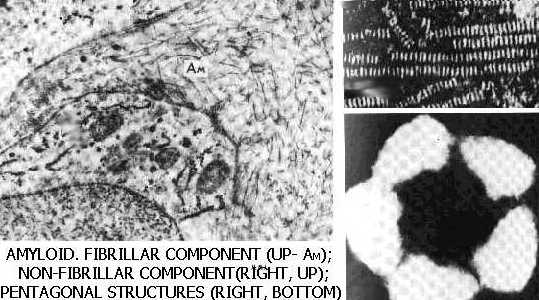
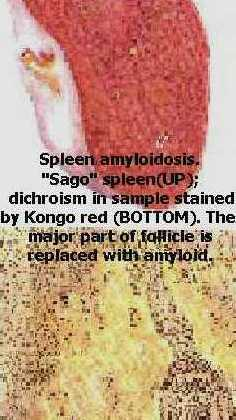
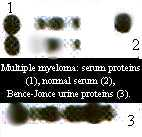
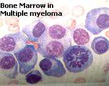

POSSIBLE IMMUNOPATHOLOGICAL DISORDERS: AMYLOIDOSIS
Immunologic mechanisms are suspected of contributing to a large number of diseases in addition to those already described in this chapter. One disease – amyloidosis - evokes strong evidence that in most patients some derangement in the immune apparatus underlies this disease, and as a systemic disease it cannot be assigned to any single organ or system.
Amyloid is a pathologic proteinaceous substance, in stained slices it appears as pink translucent material deposited between cells in various tissues and organs of the body, in a wide variety of clinical settings.
Because amyloid deposition appears so insidiously and sometimes mysteriously, its clinical recognition ultimately depends on morphologic identification of this distinctive substance in appropriate biopsy specimens.
All types of amyloid display the following tinctorial characteristics:
- When iodine is added to fresh tissue containing amyloid, a brown or yellow-red color is produced, that is transformed into blue or violet after the application of dilute sulfuric acid. R.Virchow, who interpreted the results to be starchlike, hence the designation “amyloid”, first employed this technique over a century ago.
- With hematoxylin and eosin via the light microscope, amyloid appears as an amorphous, eosinophilic pink, translucent, extracellular substance that, with progressive accumulation, encroaches on and produces pressure atrophy of adjacent cells.
- With Congo red stain amyloid appears red with apple-green birefringence when viewed under polarized light. It is usedin order to differentiate amyloid from other hyaline deposits (e.g., collagen, fibrin) a variety of histochemical techniques are employed.
- With methyl violet, amyloid is metachromatic, which means the development of a color different from that of applied stain (pink instead of violet).
- Amyloid is stained by different antisera against its components in immunomorphological analysis.
 |
Amyloid is not a single chemical substance, but a group of proteinaceous entities, similar in the mode of their physical organization. Two major chemical types of amyloid and several minor ones are known. Due to this pathogenetic mechanisms of amyloidosis vary in different cases, and the clinical circumstances under which amyloidosis appears, as well as the distribution of the deposits throughout the body, are extremely varied. In the past the term primary amyloidosis was used to describe amyloid deposition in the patients who did not have any detectable underlying disease, whereas patients with some chronic inflammatory disease were classified as having secondary amyloidosis. More recently, attention has been directed to the chemical composition and origins of amyloid as possible bases for classification. Therefore amyloidosis should not be considered a single disease; rather, it is a group of diseases sharing in common the deposition of similar-appearing protein complexes.
Although amyloid has a bland, uninteresting appearance with the light microscope, high resolution has disclosed a remarkably complex substructure. The amorphous deposits are in fact largely made up of nonbranching fibrils of indefinite length and a diameter of approximately 7.5 to 10 nm. This electron microscopic structure is identical in all types of amyloidosis. The fibrils may appear singly, in laterally aggregated bundles, or in an interlocking meshwork. Infrared spectroscopy and X-ray crystallography revealed that these fibrils are always assembled into typical unique pattern, described as “b - pleated sheet conformation”. There is no other mammalian fibril protein with similar micro-architecture, so above named structure is absolute distinguishing characteristic of amyloid. Tightly packed structure of these sheets is extremely resistant to proteolysis, thus establishing an important condition for amyloid deposition within the tissues.
In addition to these nonbranching slender fibrils a minor second component is always present in amyloid, known as the P component. With the electron microscope it appears as a pentagonal, doughnut-shaped structure having an external diameter of approximately 9 nm and an internal diameter of 4 nm. Each pentagon is composed in turn of five globular subunits.
Traditionally, amyloidosis is divided into systemic and local forms.
 |
The systemic, or generalized, pattern is characterized by multiple organ involvement. It is sub-classified into primary amyloidosis when associated with some immunocyte dyscrasia or secondary amyloidosis when it occurs as a complication of an underlying chronic inflammatory or tissue destructive process. Hereditary or familial amyloidosis constitutes a separate albeit heterogeneous group, with several distinctive patterns of organ involvement. In primary amyloidosis kidney, heart, liver, spleen, gut organs, skin, nerves and tongue are most commonly involved. Secondary subtype may involve liver, spleen, adrenals and kidney (like in chronic infections, e.g. leprosy) or alter heart, gut and tongue –similarly to pattern of primary amyloidosis (like in rheumatoid arthritis). |
In contrast to the traditional clinical classification, the chemical nature of amyloid gave birth to new one, based on amyloid content.
Immunocytochemistry established a great progress in understanding of amyloid’s chemical nature.
There are 2 major constituents of amyloid fibrils. Both are somehow related to immune system, as well as its pentagonal component, which fact requires mandatory discussion of amyloidiosis in the textbook, devoted to Immunopathology.
Approximately 90% of the amyloid material consist of fibril proteins, the remaining 10% being the P component, which is a glycoprotein.
Two chemically distinct major classes of amyloid fibril proteins have been identified; one, called AL (amyloid light-chain) is derived from plasma cells (immunocytes) and contains immunoglobulin complete light chains (mostly, l - ones) or their N-terminal fragments. As immunoglobulin-secreting cells produce the most of the AL type, the depositions of AL are associated with some form of B-cell dyscrasia. The archetype is multiple myeloma (also known as Rustitzky-Kaler disease), a monoclonal malignant tumor of plasma cells that may be associated with the deposition of amyloid of the AL type. The tumor originates in bone marrow, later forming multiple osteolytic foci in the skeleton. Monoclonal gammapathy develops with dysproteinemia and abnormal M-peak on blood serum electrophoregram.


Myeloma clone may produce not only complete Ig molecules, but also isolated light chains, appearing in serum and urine in over 70% of patients as so called Bence Jones proteins (BJP). In multiple myeloma up to 15% of patients do develop amyloidosis, all of them are positive for BJP. It can be demonstrated that the amyloid fibril protein is derived from the circulating light chains (i.e., Bence Jones protein). It is possible to create a fibrillar precipitate that has typical ultrastructure of amyloid fibrils by proteolytic digestion of natural g - Bence Jones proteins in vitro (Glenner). Besides Rustitzky-Kahler disease, B-cell lymphomas also may be complicated by immune dyscrasia, monoclonal gammapathy and AL amyloidosis. Some other rare disorders, like Waldenstrom's macroglobulinemia, heavy chain disease, solitary plasmacytomas also are examples of a monoclonal gammapathy and may result in AL production. We know that some stimuli, possibly mutagens, induce uncontrolled B-cell proliferation and hence excessive synthesis of the soluble amyloid precursors proteins (immunoglobulin light chains). As already discussed, the derivation of amyloid - like fibrils from light chains by limited proteolysis has been demonstrated. Unknown, however, is why only a small fraction of individuals with circulating free light chains develop amyloidosis?Not all patients producing excessive light chains, inevitably develop amyloidosis (the concept of different amyloidogenic potential of light chains, produced and handled by different individuals).
Certain minor differences of light chains obtained from different B-clones (maybe as a result of non-lethal somatic mutations) or some peculiarity of subsequent light chain metabolism are believed to be able to cause assembling of “b - pleated sheet conformation” and production of amyloid deposits. AL amyloid is derived largely from the d VI light chain family. In addition to their amyloidogenetic potential, the subsequent cleavage of light chains by the mononuclear phagocyte system may also be important.
Anyway, the amyloidosis derived from AL produced by B-cells is called primary. In many cases person with primary amyloidosis does not manifest myeloma, lymphoma or any other overt clonal B-cell disorder. Nevertheless, there exist some inapparent hyperactivity of B-clone(s), because detailed investigation can reveal lymphocytosis, moderate increase in plasma cell number in bone marrow, monoclonal Ig and/or their light chains in blood and urine samples, although without overt tumor symptoms. In cases like this the amyloidosis is discovered virtually as sudden unexpected finding, deserving the name of “primary” or occurring without overt preliminary diseases. So, primary amyloidosis is obviously an immunopathological disorder, because it always depends on derangement of immunoglobulin-secreting cells function. In North America this is the most common form of amyloidosis.
The other major fibril component, designated AA (amyloid-associated), is a unique non-immunoglobulin protein (8,5 kD of molecular mass) synthesized in the liver.
The second major class of amyloid fibril protein (AA) does not have structural homology to immunoglobulins or any known protein. It has 76 amino acid residues. AA fibrils are derived from a larger (18,000 daltons) precursor in the serum called SAA (serum amyloid associated) protein that is synthesized in the liver and circulates as apoprotein in association with the HDL3 subclass of lipoproteins.
The AA protein is found in those clinical settings described later as "secondary amyloidosis". In majority of cases there is obvious clinical relation to primary chronic inflammation of infectious or immunopathological origin, causing AA amyloid deposition of secondary amyloidosis. So, in modern classifications it is called reactive amyloidiosis.
The feature common to most of the conditions associated with reactive systemic amyloidosis is protracted breakdown of cells resulting from a wide variety of infectious and noninfectious chronic inflammatory conditions. At one time tuberculosis, bronchiectasis, leprosy, chronic pyelonephritis and chronic osteomyelitis were the most important underlying conditions, but with the advent of effective antimicrobial chemotherapy the importance of these conditions has diminished. More commonly now, reactive systemic amyloidosis complicates systemic immune complex and other systemic immunopathological diseases, like rheumatoid arthritis, other connective tissue disorders such as dermatomyositis and scleroderma, and also inflammatory autoimmune bowel disease, particularly ulcerative colitis. Chronic tropical infectious colitis also can cause AA production. The chronic skin infections associated with "skin-popping" of narcotics (e.g. heroin) seem to be responsible for very frequent secondary amyloidosis in drug addict patients. Reactive systemic amyloidosis may also occur in association with non-immunocyte-derived tumors, the two most common being renal cell carcinoma and Hodgkin's disease.
Among all these reasons of secondary amyloidosis, the most common associated condition in Northern America is rheumatoid arthritis. These figures, obtained from autopsy studies, may be somewhat higher than the true frequency of amyloidosis in an unselected group of rheumatoid arthritis patients. In all these cases serum content of SAA and production of AA is greatly and chronically increased.
SAA is an acute phase reactant whose levels increase 1000-fold within 24 hours of acute inflammation in normal healthy individuals. This increase is brought about by the release of IL-1 (and also IL-6) from macrophages, which in turn enhances the synthesis of SAA by liver cells. With chronic tissue destruction and inflammation there is a sustained increase in SAA levels, presumably due to continued activation of macrophages. However, increased production of SAA by itself cannot be sufficient for the deposition of amyloid because amyloidosis is not mandatory consequence of any chronic inflammation. It is believed that SAA is normally degraded to soluble end products by the action of monocyte-associated serine esterases and that in individuals who develop amyloidosis the genetically determined inability to metabolize SAA properly leads to the generation of insoluble AA molecules. But, precise character of this defect (or defects) is still unknown. So, it is safe to say that secondary AA amyloidosis is a complication of prolonged or recurrent “acute phase response”, thus also related to immunopathological conditions.
AA component is deposited also in one of familiar hereditary subtypes of secondary amyloidosis, accompanying familiar Mediterranean fever. In this autosomal recessive disease, spread amongst the persons of Armenian, Sephardic Hebrew and Arabic origin, there are periodic attacks of fever, polyserositis and joint pain, provoked by cytokine release and accompanied by acute phase response. AA amyloid is deposited in spleen, liver and kidney of patients.
Several other biochemically distinct proteins have been found in amyloid deposits in a variety of clinical settings:
- Transthyretin is a normal serum protein that binds and transports thyroxine and retinol, hence the name trans-thy-retin. It was previously called prealbumin, because it precedes serum albumin or serum electrophoresis. Because it has no relationship to serum albumin, however, the term prealbumin is misleading. A mutant form of transthyretin (and its fragments) is deposited in a group of genetically determined disorders reffered to as familial amyloid polyneuropathies. Unlike AA-dependent hereditary amyloidosis of Mediterrenean fever, this autosomal dominant familiar disorder is not ethnically selective, and rare sporadic cases are observed in many countries – from Sweden to Japan. In each of these conditions the transthyretin deposited in the tissues differs from its normal counterpart by a single amino acid, involving most commonly the substitution of methionine for valine at position 30. This type of amyloid fibril component is sometimes called AF. Another variant form of transthyretin is deposited in one of amyloidosis subtypes, associated with aging (senile cardiac). It is called AS.
- b 2-microglobulin, a component of the MHC class I molecules and a normal serum protein, has recently been identified as the amyloid fibril subunit in the course of patients on long-term hemodialysis. It is thought that this constituent is not filtered out properly in hemodialysis procedure. At the same time, it presents in serum of chronic renal failure patients in increased amounts. In some series as many as 70% of the patients on long-term dialysis developed amyloid deposits in the synovium, joints, and tendon sheaths.
- b 2 - amyloid protein (Ab 2 ) , a 4000-dalton peptide (also called A4) constitutes the core of cerebral plaques found in Alzheimer's disease, as well as the amyloid deposited in walls of cerebral blood vessels in patients with Alzheimer's disease (senile cerebral amyloidosis, etiologically associated with prionic infection). The A4 protein is believed to be derived from a much larger 40,000-dalton precursor APP, that has the characteristics of a transmembrane glycoprotein, presents in blood and cerebrospinal fluid and is encoded in 21st chromosome.
- In addition to the foregoing, local amyloid deposits derived from diverse precursors such as hormones (procalcitonin, proinsulin) and keratin have also been reported.
- The nonfibrillar P component is distinct from the amyloid fibrils but is closely associated with them in all forms of amyloidosis. It constitutes approximately 10% of the amyloid substance and has been found to be identical to a normal a 1-serum glycoprotein. It has a molecular weight of 180,000 to 220,000 daltons and a striking homology with C-reactive protein, which is an acute-phase reactant. It has great affinity to fibril components of amyloid, presents in both primary and secondary subtypes and is account for positive periodic acid-Schiff (PAS) reaction of amyloid, which, in spite of this, is not a saccharide.
Amyloid may be localized, when deposits are limited to a single organ. Nodular deposits of amyloid are most often encountered in the lung, larynx, skin, urinary bladder, tongue, and the region about the eye. In localized amyloidosis the mechanism of amyloid node formation, as well as chemical nature of amyloid may vary. Sometimes it is a node surrounded by plasma cells and the nature of amyloid is of AL type, like in primary systemic one. In other cases it is amyloid composed with great contribulion of local endocrine products from diffuse endocrine cells. An example is amyloid within medullary carcinoma of thyroid gland, containing peptide hormone calcitonin precursor. This type of amyloid fibrils is sometimes referred to as AE. In localized skin amyloid, observed in lichenoid skin lesions, there is AD type of amyloid fibrils, which has unknown (possibly, keratin?) origin.
Clinically amyloidosis may be recognized after some history of chronic relapsing immunopathological or infectious diseases, or after immune dyscrastic gammapathy. But, quite often it develops in latent mode. Clinical manifestation of amyloidosis includes enlargement of the organ(s) involved (hepatosplenomegaly, cardiomegaly, macroglossia etc.). The altered organs are less resistant to distension and trauma, for example blood vessels display a tendency to bleed. Other frequent manifestations are nephrotic syndrome and chronic renal failure in kidney amyloidosis, cardiac arrhythmias and restrictive cardiomyopathy – in heart involvement, malabsorption in gut amyloidosis, transmission failure in peripheral nerve commitment.
Of course, amyloidosis – is a group of different disorders. But, the origin of major fibril components of primary AL amyloid and secondary AA and Ab 2 ones, as well as non-fibrillar P component – is obviously and tightly related to immunopathological processes and excesses of acute phase pre-immune response.